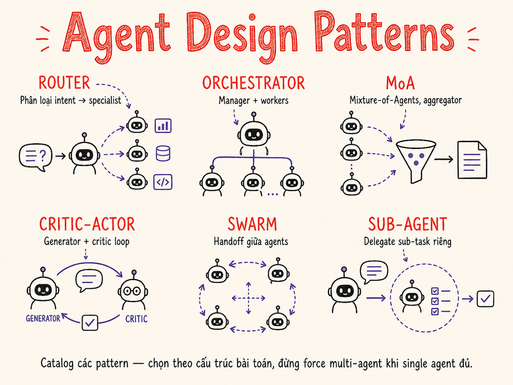

Agent Design Patterns nâng cao
Từ single-agent đơn giản đến swarm, Mixture-of-Agents, Critic-Actor và recursive agent-as-tool — catalogue đầy đủ các pattern kiến trúc cho hệ thống agent production 2026 cùng hướng dẫn chọn pattern theo bài toán.

23.1 Taxonomy các Agent Pattern
Trước khi đi vào từng pattern, hãy định vị chúng trong một taxonomy chung. Ba trục phân loại quan trọng nhất là số lượng LLM tham gia, cách điều phối control flow, và mức độ tự chủ.
| Nhóm | Pattern đại diện | Số LLM | Control flow | Khi nào dùng |
|---|---|---|---|---|
| Single-agent | Tool-using ReAct, Plan-and-Execute | 1 | LLM tự điều khiển | Task tuần tự, không cần parallelism |
| Multi-agent hierarchical | Orchestrator-Workers, Sub-agent delegation | 2–N | Orchestrator central | Task phức tạp, cần chuyên môn hóa |
| Parallel ensemble | Swarm, MoA, Debate | N đồng thời | Phân tán / aggregator | Cần độ tin cậy cao, nhiều góc nhìn |
| Feedback loop | Critic-Actor, Reflexive | 1–2 | Vòng lặp đánh giá-sửa | Chất lượng output quan trọng hơn tốc độ |
| Recursive | Agent-as-tool, nested agents | Variable | Đệ quy / dynamic | Task không biết trước độ sâu phân rã |
Luôn bắt đầu với pattern đơn giản nhất có thể giải quyết bài toán. Complexity không phải miễn phí — mỗi agent thêm vào là thêm latency, cost, và failure modes. Chỉ leo thang lên pattern phức tạp hơn khi bạn đã chứng minh pattern đơn giản không đủ.
23.2 Tool Composition — Atomic → Composite → Derived
Trước khi thiết kế agent architecture, hãy thiết kế tốt tool library. Tool được tổ chức thành 3 tầng: atomic (nguyên tử), composite (tổ hợp), và derived (dẫn xuất hay còn gọi là tool-as-skill).
Tầng 1 — Atomic tools
Thực hiện đúng một side effect nhỏ, idempotent, không thể chia nhỏ thêm.
read_file(path)http_get(url)db_query(sql)send_email(to, subject, body)
Tầng 2 — Composite tools
Kết hợp nhiều atomic tools thành một workflow có tên rõ nghĩa hơn cho LLM.
search_and_summarize(query)→ web_search + extract + summarizefetch_invoice_context(id)→ db_query + read_file + format
Tầng 3 — Derived tools / Tool-as-skill
Một skill hoàn chỉnh được đóng gói thành tool — bên trong có thể là một agent nhỏ chạy vài bước, nhưng LLM gọi nó như một black box đơn giản.
# Bên ngoài: agent nhìn thấy một tool đơn giản
tools = [{
"name": "generate_quarterly_report",
"description": "Generate a full quarterly financial report for a tenant.
Internally fetches data, runs analysis, formats PDF. Takes 30–60s.",
"input_schema": {"tenant_id": "string", "quarter": "string"}
}]
# Bên trong: là một mini-agent với nhiều steps
async def generate_quarterly_report(tenant_id: str, quarter: str) -> dict:
data = await fetch_financial_data(tenant_id, quarter)
analysis = await llm.analyze(data)
pdf_path = await render_pdf(analysis)
return {"status": "done", "path": pdf_path}Thay vì để orchestrator agent biết tất cả 40 bước của một quy trình phức tạp, gói toàn bộ quy trình đó vào một derived tool. Orchestrator chỉ thấy 1 tool call, context window sạch, prompt ngắn hơn, ít nhầm lẫn hơn.
23.3 Sub-agent Delegation — Context Handoff & Return Aggregation
Khi một agent "spawn" một sub-agent, ba vấn đề cần giải quyết rõ ràng: bao nhiêu context truyền xuống, sub-agent trả về gì, và parent làm gì với nhiều kết quả.
Khi nào spawn sub-agent — và khi nào thì không
| Tình huống | Spawn sub-agent? | Lý do |
|---|---|---|
| Task có thể parallel, độc lập nhau | Có | Tiết kiệm latency đáng kể |
| Sub-task cần specialist prompt khác hẳn | Có | Context isolation, tránh "role confusion" |
| Sub-task cần tool set khác (e.g. code runner) | Có | Security isolation, least-privilege |
| Sub-task chỉ cần 1-2 tool calls | Không | Overhead spawn vượt lợi ích |
| Context của parent và child hoàn toàn giống | Không | Chỉ duplicate cost, không có giá trị |
| Task cần state chia sẻ liên tục giữa steps | Thận trọng | State sync phức tạp; dễ race condition |
Cost trade-off
Mỗi sub-agent spawn = ít nhất 1 LLM call mới với context riêng. Với 5 sub-agents chạy song song, bạn trả gấp ~5 lần chi phí nhưng latency có thể chỉ tăng ~20–30% so với tuần tự. Đây là trade-off cost để lấy speed. Với bài toán latency-sensitive, đáng trả. Với batch job không có SLA latency, cân nhắc kỹ.
23.4 Dispatcher / Router Agent
Dispatcher (hay Router) là một agent đặc biệt có nhiệm vụ duy nhất: phân loại intent của request và forward đến đúng specialist agent hoặc pipeline. Đây là pattern backbone của các AI product phức tạp có nhiều chức năng.
Hai chiến lược routing
LLM-based routing
Dùng một LLM call nhỏ (cheap model như Haiku/Flash) để classify intent thành category.
router_prompt = """
Classify the user request into one of:
- BILLING: invoices, payments, subscriptions
- TECHNICAL: bugs, integrations, APIs
- GENERAL: product questions, docs
- ESCALATE: complaints, legal
Reply with ONLY the category name.
"""
category = cheap_llm.generate(
system=router_prompt, user=request
)Structured output routing
Yêu cầu model trả về JSON với field route và confidence — dễ validate và fallback.
result = llm.generate(
system=router_prompt,
response_format={
"route": "string",
"confidence": "number",
"reason": "string"
}
)
if result["confidence"] < 0.7:
route = "GENERAL" # fallbackNếu router classify sai, toàn bộ task đi nhầm hướng. Luôn có: (1) fallback route mặc định khi confidence thấp, (2) logging mọi routing decision để phát hiện drift, (3) human-in-the-loop cho các request high-stakes.
23.5 Swarm Pattern — Handoff via Tool Calls
Swarm (được Anthropic giới thiệu rộng rãi và OpenAI triển khai trong openai-swarm framework) là pattern trong đó các agents chuyển giao control cho nhau thông qua một cơ chế đặc biệt: handoff tool call. Không có orchestrator trung tâm — mỗi agent tự quyết định khi nào nó cần "bàn giao" cho agent khác.
Cơ chế Handoff
# Mỗi agent có một tool đặc biệt: transfer_to_X
billing_agent_tools = [
check_invoice_status,
generate_invoice,
transfer_to_technical_support, # handoff tool
transfer_to_account_manager, # handoff tool
]
# Khi billing agent gọi transfer_to_technical_support(reason="..."):
# → harness dừng billing agent loop
# → khởi động technical_support agent với cùng conversation history
# → plus context message: "Transferred from billing: {reason}"
def run_swarm(initial_agent, messages, context_vars):
current_agent = initial_agent
while True:
response = current_agent.run(messages, context_vars)
if response.type == "handoff":
current_agent = response.next_agent
messages = response.updated_messages
elif response.type == "final":
return response.output
else:
messages.append(response.message)Swarm vs Orchestrator-Workers
| Chiều | Swarm | Orchestrator-Workers |
|---|---|---|
| Control | Phi tập trung — agent tự chuyển giao | Tập trung — orchestrator điều phối |
| Context | Toàn bộ history truyền qua | Orchestrator tóm tắt, worker nhận distilled context |
| Phù hợp | Customer journey tuyến tính (support, sales) | Task song song, decomposable |
| Debugging | Dễ trace — handoff log rõ ràng | Phức tạp hơn — phải trace orchestrator decisions |
| Scalability | Tuyến tính theo độ dài journey | Có thể parallel, scale tốt hơn |
23.6 Mixture-of-Agents (MoA): N Proposers + Aggregator
Mixture-of-Agents (Wang et al., 2024) lấy cảm hứng từ Mixture of Experts trong deep learning: chạy N LLMs độc lập trên cùng một task (proposers), sau đó một LLM thứ N+1 (aggregator) tổng hợp các câu trả lời thành output tốt nhất. Kết quả thường vượt trội hơn từng model đơn lẻ.
Khi nào MoA hữu ích
- High-stakes decisions: Medical, legal, financial — cần nhiều nguồn xác nhận
- Benchmark-chasing: MoA thường cho SOTA trên leaderboards mà không fine-tune
- Kiểm soát bias của từng model: Mỗi model có bias khác nhau; tổng hợp giảm thiểu
- Chú ý cost: MoA với 5 proposers = ~5–6x cost so với single model call. Không phù hợp cho latency-sensitive hoặc budget-constrained use cases.
23.7 Critic-Actor Pattern — Generate → Critique → Revise
Critic-Actor là vòng lặp phản hồi trong đó Actor generate output, Critic evaluate theo rubric cụ thể, và Actor revise dựa trên feedback. Có thể dùng một model cho cả hai vai trò (self-critique) hoặc hai model riêng biệt.
Thiết kế Critic rubric hiệu quả
critic_prompt = """
You are a strict quality reviewer. Evaluate the DRAFT against these criteria:
1. ACCURACY (0–10): Is every factual claim correct?
2. COMPLETENESS (0–10): Does it address all parts of the task?
3. TONE (0–10): Is the tone appropriate for the audience?
4. SAFETY (0–10): Any harmful, biased, or legally risky content?
Output JSON:
{
"scores": {"accuracy": X, "completeness": X, "tone": X, "safety": X},
"overall": X, // weighted average
"issues": ["issue1", "issue2"],
"suggestions": ["fix1", "fix2"]
}
If overall >= 9.0, set "approved": true.
"""Self-critique (cùng model đóng vai Critic) rẻ hơn và nhanh hơn. Hiệu quả với tasks sáng tạo (writing, code). Hạn chế: model thường không critique chặt output của chính mình. Two-model critique (model khác làm Critic) cho kết quả khách quan hơn, đặc biệt hiệu quả khi Actor và Critic là model khác nhau (e.g., Sonnet generates, Opus critiques).
23.8 Agent-as-Tool — Recursive Agent Calls
Trong pattern này, một agent được đóng gói hoàn toàn như một tool mà agents khác có thể gọi. Đây là nền tảng của kiến trúc recursive — agent A gọi agent B như tool, agent B có thể gọi agent C, tạo ra cây gọi động.
Triển khai Agent-as-Tool
# Bước 1: Định nghĩa specialist agent như một callable
class ResearchAgent:
def __call__(self, query: str, depth: int = 2) -> str:
# Agent này có tools riêng: web_search, browse, extract
result = run_agent_loop(
system="You are a research specialist...",
tools=[web_search, browse_url, extract_facts],
user=query,
max_iterations=10
)
return result.summary # trả về summary, không phải raw history
# Bước 2: Wrap thành tool schema cho orchestrator
research_tool = {
"name": "research_agent",
"description": "Deep research on any topic. Spawns a specialist agent
that searches web, browses sources, and returns a structured summary.
Use for tasks requiring 5+ sources or multi-angle research.",
"input_schema": {
"query": {"type": "string", "description": "Research question"},
"depth": {"type": "integer", "default": 2}
}
}
# Bước 3: Orchestrator dùng research_agent như bất kỳ tool nào khác
orchestrator_tools = [
research_tool, # ← agent ẩn bên trong
write_report,
send_email,
]
Agent A gọi Agent B, B gọi C, C lại gọi A — vòng lặp đệ quy vô tận.
Luôn truyền và kiểm tra depth parameter, raise exception khi vượt ngưỡng (thường 3–5).
Trong production, implement circuit breaker ở cấp harness, không phụ thuộc vào agent tự báo.
23.9 Reflexive / Self-modifying Agent
Reflexive agent có khả năng nhìn lại kế hoạch của mình và thay đổi nó dựa trên kết quả quan sát. Khác với Critic-Actor (chỉ sửa output), reflexive agent sửa plan / prompt / strategy — tức là "meta-level" tự điều chỉnh.
Hai mức độ self-modification
Mức 1 — Plan rewriting
Agent nhận ra step hiện tại fail hoặc không hiệu quả, tự viết lại plan cho các bước còn lại.
# Sau khi step 3 fail:
current_plan = [
"step1: done",
"step2: done",
"step3: FAILED - API down",
"step4: pending",
]
# Agent tự replan:
new_plan = planner.replan(
original_task,
completed=current_plan[:2],
failed=current_plan[2],
reason="external API unavailable"
)
# → step3b: use cached data insteadMức 2 — Prompt rewriting
Agent phát hiện system prompt của mình không phù hợp với task, tự tạo một system prompt mới tốt hơn.
# Agent nhận thấy sau 3 bước:
# "Tôi đang viết quá verbose,
# user cần bullet points ngắn"
meta_instruction = f"""
Based on feedback so far:
{observations}
Rewrite the system prompt to better
match user's actual needs. Focus on:
- Output format preference
- Level of detail required
- Domain vocabulary used
"""
new_system_prompt = llm.generate(
meta_instruction, observations
)Mọi lần agent tự sửa plan hoặc prompt, log lại: version cũ, version mới, và lý do. Không có audit trail, hành vi agent trở nên không dự đoán được và rất khó debug. Nhiều team giới hạn self-modification chỉ ở plan-level (mức 1), không cho phép prompt rewriting (mức 2) trong production.
23.10 Pattern Selection Guide
Dùng bảng quyết định này để chọn pattern phù hợp. Ưu tiên đọc từ trái sang phải — dừng lại ở cột đầu tiên match với đặc điểm bài toán của bạn.
| Đặc điểm bài toán | Pattern khuyến nghị | Lý do | Cost | Complexity |
|---|---|---|---|---|
| Task đơn, tuần tự, ít tools (<8) | Single-Agent ReAct | Đơn giản nhất, dễ debug | $ | ★☆☆☆☆ |
| Task phức tạp nhưng chia được thành subtask độc lập | Orchestrator-Workers | Parallel execution giảm latency | $$ | ★★★☆☆ |
| Request đa dạng, cần routing đến expert khác nhau | Dispatcher + Specialists | Tối ưu từng domain, không over-generalize | $$ | ★★☆☆☆ |
| Customer journey tuyến tính, cần handoff theo ngữ cảnh | Swarm | Natural conversation flow, context preserved | $$ | ★★☆☆☆ |
| Cần output chất lượng cao, accuracy quan trọng hơn tốc độ | Critic-Actor | Multiple revision rounds improve quality | $$$ | ★★★☆☆ |
| High-stakes, cần cross-validate từ nhiều nguồn | MoA | Ensemble reduces individual model bias | $$$$ | ★★★★☆ |
| Task depth không biết trước, cần dynamic decomposition | Agent-as-Tool (recursive) | Flexible depth, composable specialists | $$$ | ★★★★☆ |
| Task thay đổi constraint runtime, cần adaptive strategy | Reflexive Agent | Self-correcting plan beats rigid pipeline | $$$ | ★★★★★ |
Trong thực tế, các pattern thường kết hợp với nhau. Ví dụ điển hình: Dispatcher → Specialist workers (mỗi worker dùng Critic-Actor internally) → MoA aggregation cho output cuối. Không có pattern nào là "đúng duy nhất" — bắt đầu đơn giản và thêm layer khi bạn có evidence từ production rằng cần thiết.
23.11 Cách cũ vs Cách hiện tại
Single-Agent: Chained Prompts → Tool-Using Loop
Chuỗi prompt hardcoded — mỗi bước là một prompt riêng, output được nối vào prompt tiếp theo bằng string concatenation.
step1 = llm.call(f"Summarize: {doc}")
step2 = llm.call(f"Extract keys: {step1}")
step3 = llm.call(f"Format: {step2}")
# Brittle: thay đổi step2 break toàn chuỗi
# Không xử lý được error ở giữa
# Không thể replan khi failAgent tự điều khiển loop với tool calling — LLM quyết định tool nào cần, retry khi fail, adapt plan theo kết quả.
result = agent.run(
task="Analyze and format this doc",
tools=[summarize, extract, format_output],
max_iter=10
)
# Agent tự chọn thứ tự tools
# Tự retry nếu tool fail
# Tự replan nếu approach không workMulti-Agent: Manual Routing → Swarm Handoff
Multi-agent bằng if/else hardcoded — developer viết explicit routing logic trong code.
if "invoice" in query:
result = billing_agent.handle(query)
elif "bug" in query:
result = tech_agent.handle(query)
else:
result = general_agent.handle(query)
# Fragile keyword matching
# Không handle ambiguous cases
# Không có handoff trong mid-conversationSwarm với structured handoff tools — agents tự quyết định khi nào chuyển giao và tại sao.
# Billing agent có thể handoff bất cứ lúc
tools = [
check_invoice,
transfer_to_tech(reason: str),
transfer_to_manager(reason: str),
]
# Khi billing agent nhận bug report:
# → tự gọi transfer_to_tech("User reported
# API error while paying invoice")
# → context + reason được truyền theoRouting: Keyword Matching → LLM Classifier
Regex hoặc keyword matching để detect intent — nhanh nhưng cực kỳ brittle với ngôn ngữ tự nhiên đa dạng.
keywords = {
"BILLING": ["invoice", "pay", "bill"],
"TECH": ["error", "bug", "crash"],
}
# Fails: "I can't access my account"
# Fails: Vietnamese typos
# Fails: sarcasm, implicit intentCheap LLM (Haiku/Flash) làm classifier với structured output — handle mọi ngôn ngữ, tone, và cách diễn đạt.
intent = cheap_llm.classify(
text=user_message,
categories=["BILLING", "TECH", "GENERAL"],
output_format="json_with_confidence"
)
# Handles: Vietnamese, typos,
# implicit requests, multi-intent
# Cost: ~$0.0001 per classificationQuality Loop: Vibe Check → Rubric-based Critic
Không có quality loop — generate once, ship. Hoặc có nhưng dùng vague self-evaluation prompt.
response = llm.generate(task)
# Check bằng: "Is this good? yes/no"
# LLM luôn trả lời "yes" về output
# của chính mình → vô nghĩaCritic với rubric định lượng cụ thể — score từng chiều, issue list, actionable suggestions.
for _ in range(max_iter=3):
draft = actor.generate(task)
critique = critic.evaluate(
draft, rubric=QUALITY_RUBRIC
)
if critique.overall >= 9.0: break
task = inject_feedback(task, critique)
# Measurable, reproducible, debuggableCode skeleton các pattern chính (Python pseudo)
# Dispatcher / Router pattern skeleton
class DispatcherAgent:
specialists = {
"BILLING": BillingAgent(),
"TECHNICAL": TechnicalAgent(),
"GENERAL": GeneralAgent(),
}
def run(self, user_message: str) -> str:
# 1. Classify intent (cheap model)
intent = cheap_llm.classify(user_message, list(self.specialists.keys()))
# 2. Fallback nếu confidence thấp
route = intent.category if intent.confidence > 0.7 else "GENERAL"
# 3. Forward đến specialist
specialist = self.specialists[route]
return specialist.handle(user_message)# Swarm pattern skeleton
def run_swarm(initial_agent, user_message: str) -> str:
messages = [{"role": "user", "content": user_message}]
current_agent = initial_agent
max_handoffs = 10 # guard
for _ in range(max_handoffs):
response = current_agent.run(messages)
if response.type == "handoff":
next_agent = response.next_agent
messages.append({
"role": "system",
"content": f"Transferred from {current_agent.name}: {response.reason}"
})
current_agent = next_agent
elif response.type == "final":
return response.content
raise RuntimeError("Max handoffs exceeded")# Mixture-of-Agents skeleton
import asyncio
proposer_models = [
"claude-opus-4-5", "gpt-4o",
"gemini-2.0-flash", "llama-3.3-70b",
]
async def run_moa(task: str) -> str:
# Layer 1: run all proposers in parallel
drafts = await asyncio.gather(*[
llm_call(model, task) for model in proposer_models
])
# Layer 2: aggregator synthesizes
aggregator_prompt = f"""
You have {len(drafts)} independent responses to the same task.
Synthesize the best final answer, incorporating the strongest
points from each while resolving any contradictions.
Task: {task}
Responses:
{chr(10).join(f"Model {i+1}: {d}" for i, d in enumerate(drafts))}
"""
return await llm_call("claude-opus-4-5", aggregator_prompt)# Critic-Actor pattern skeleton
def run_critic_actor(task: str, max_iterations: int = 3) -> str:
best_draft = None
best_score = 0.0
for iteration in range(max_iterations):
# Actor generates
draft = actor_llm.generate(task)
# Critic evaluates with rubric
critique = critic_llm.evaluate(
task=task, draft=draft,
rubric=RUBRIC # accuracy, completeness, tone, safety
)
if critique.overall > best_score:
best_score, best_draft = critique.overall, draft
if critique.overall >= 9.0:
break
# Inject feedback for next iteration
task = f"{original_task}\n\nPrev draft issues:\n{critique.issues}"
return best_draft# Agent-as-Tool (recursive) skeleton
def make_agent_tool(agent_class, name: str, description: str, max_depth: int = 3):
def agent_tool(query: str, _depth: int = 0) -> str:
if _depth >= max_depth:
raise RecursionError(f"Agent depth limit {max_depth} reached")
agent = agent_class(depth=_depth + 1)
result = agent.run(query)
return result.summary # compress, không trả raw history
agent_tool.__name__ = name
agent_tool.__doc__ = description
return agent_tool
# Usage
research_tool = make_agent_tool(
ResearchAgent,
name="research_agent",
description="Deep research on any topic. Returns structured summary."
)
orchestrator_tools = [research_tool, write_report, send_notification]Tóm tắt
① Single-Agent ReAct: Một LLM, nhiều tools, loop tự chủ — điểm khởi đầu cho mọi agent.
② Tool Composition: Atomic → Composite → Derived (tool-as-skill) giúp giảm context bloat và giấu complexity.
③ Sub-agent Delegation: Spawn khi tasks độc lập và parallel; truyền context distilled, nhận summary ngắn gọn — không phải raw history.
④ Dispatcher/Router: LLM classifier giá rẻ phân loại intent và forward đến specialist — backbone của AI product đa năng.
⑤ Swarm: Agents chuyển giao cho nhau qua handoff tool call, không có orchestrator trung tâm — phù hợp customer journey tuyến tính.
⑥ MoA: N proposers chạy song song, aggregator tổng hợp — ensemble vượt trội từng model đơn, nhưng cost nhân N.
⑦ Critic-Actor: Generate → evaluate bằng rubric cụ thể → revise — cần max_iterations để tránh infinite loop.
⑧ Agent-as-Tool: Đóng gói agent như black box callable, cho phép orchestrators dùng mà không cần biết nội tại — cần depth guard bắt buộc.
⑨ Reflexive: Agent tự sửa plan hoặc prompt dựa trên observation — mạnh nhất nhưng cần audit trail đầy đủ.
- Bắt đầu với Single-Agent + tool composition tốt. Hầu hết bài toán giải quyết được ở đây.
- Thêm Dispatcher khi có nhiều intent domain khác nhau rõ ràng.
- Dùng Orchestrator-Workers hoặc Swarm khi task cần parallel execution hoặc handoff tự nhiên.
- Critic-Actor khi quality quan trọng hơn latency và cost — giới hạn max 3–5 iterations.
- MoA chỉ khi accuracy critical và budget cho phép — không dùng cho production real-time.
- Agent-as-Tool và Reflexive là advanced patterns — chỉ khi simpler patterns đã proven không đủ.
- Mọi pattern đều cần: max_iterations, session timeout, cost cap, và observability tracing.